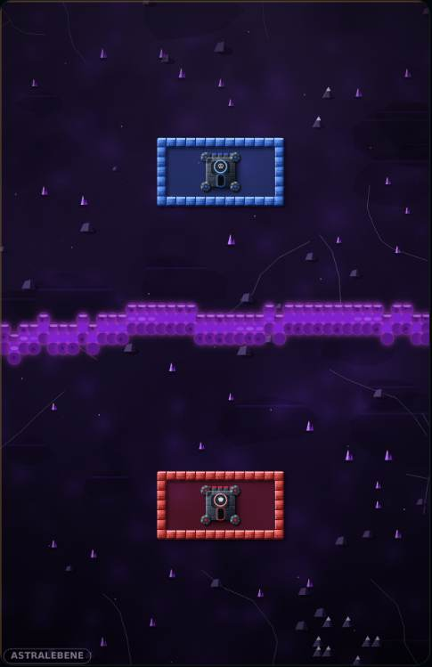
Stack
& Siege
Eine Lücke, und die Burg fällt.
Burgenduell für iPhone und iPad. Du baust deinen Wall aus fallenden Steinen, der Gegner schießt ihn dir wieder auf.
Beta beitreten Kostenlos über Apples TestFlight. Den Link auf dem iPhone oder iPad öffnen — der Beitritt passiert in der TestFlight-App. Oder sofort im Browser spielen. Sofort im Browser spielen Die iOS-Beta liegt bei Apple zur Prüfung. Sobald sie offen ist, steht der TestFlight-Knopf hier.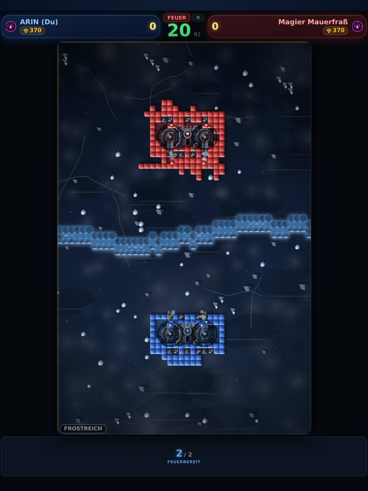

Der Takt
Bauen. Schießen. Rüsten.
Einmal aufstellen, danach im Takt: 25 Sekunden bauen, 20 schießen, 15 rüsten. Ihr spielt gleichzeitig — niemand wartet auf einen Zug.
Steine fallen dir zu, du drehst sie und legst sie ab. Erst das Loch von letzter Runde schließen, dann erweitern. In dieser Reihenfolge, nicht umgekehrt.

Sieben Welten
Vom Frostreich bis in den Vulkanschlund.
Jede Partie spielt in einer anderen Landschaft — eigener Fluss, eigene Farben, eigener Boden. Niemand wählt sie aus: Die Welt hängt an einer Zahl, die beide Geräte teilen. Ihr steht immer in derselben.
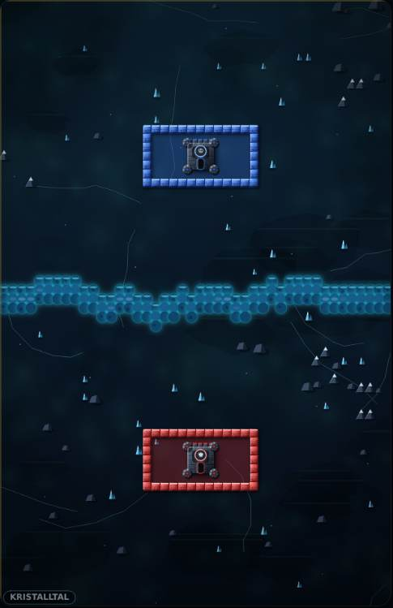
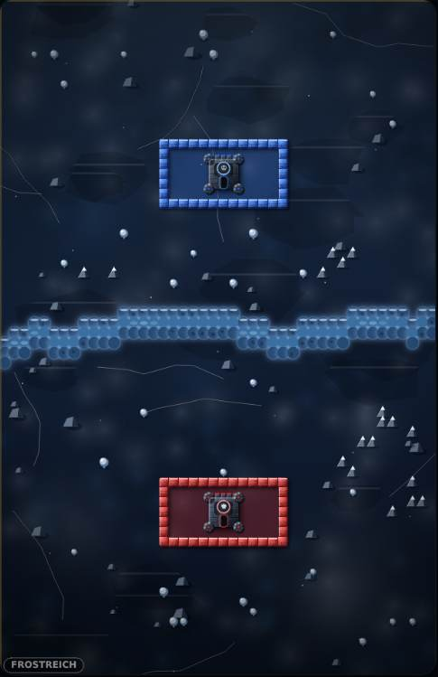
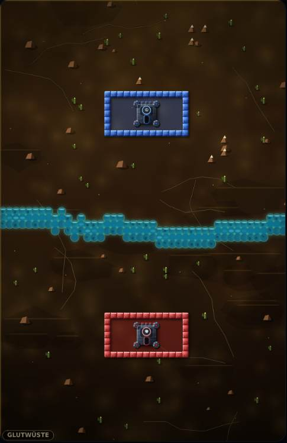
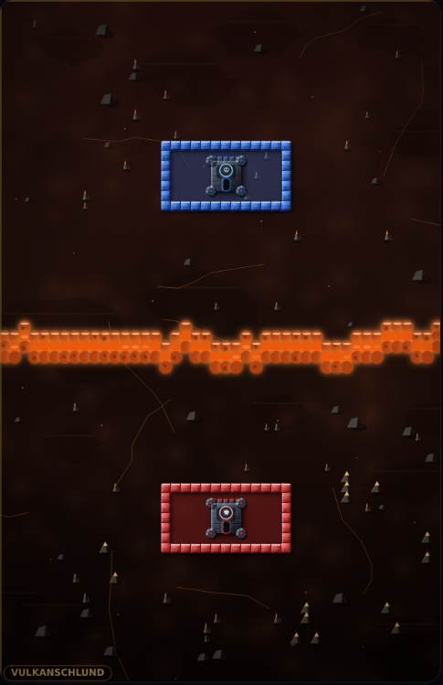
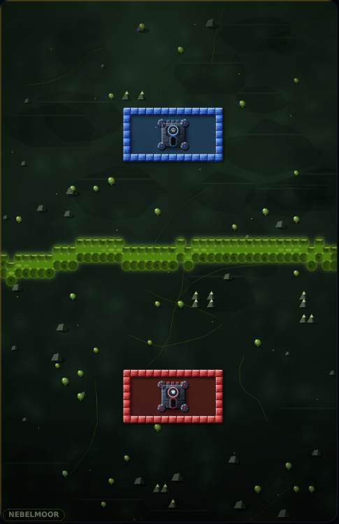
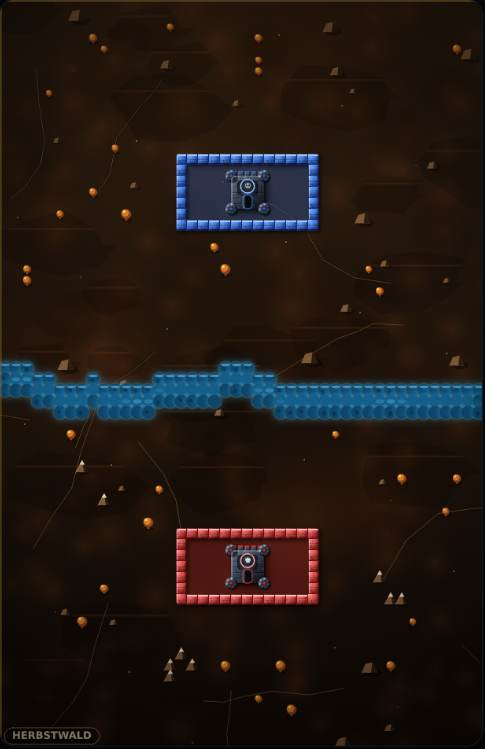
Die eine Regel
Geschlossen heißt geschlossen.
Am Ende der Bauphase lässt das Spiel Wasser von außen in dein Feld laufen. Erreicht es deine Burg, bist du raus.
Diagonale zählen. Zwei Steine, die sich nur an der Ecke berühren, halten nichts auf — und deine Kanonen sind keine Mauer.
Feuerkraft
Zwei Kanonen, zwei Absichten.
Beute verdienst du im Match — für jede Kugel, die trifft, für jede überstandene Runde, für jede zerstörte Kanone des Gegners. Ausgeben kannst du sie nur in der Rüstphase.
Mauerbrecher
Reißt Löcher in den Wall. Jede weitere kostet achtzig Beute mehr als die davor.
200, danach +80 je KaufBezwinger
Trifft ausschließlich Kanonen. In Runde 1 nicht zu bezahlen: mit fehlerfreiem Spiel kommst du auf 530.
550
An einem Gerät
Legt das Telefon zwischen euch.
Gespielt wird gleichzeitig, jeder mit eigenem Bauteil. Das Spiel erkennt an der Stelle, die dein Finger berührt, wem er gehört.


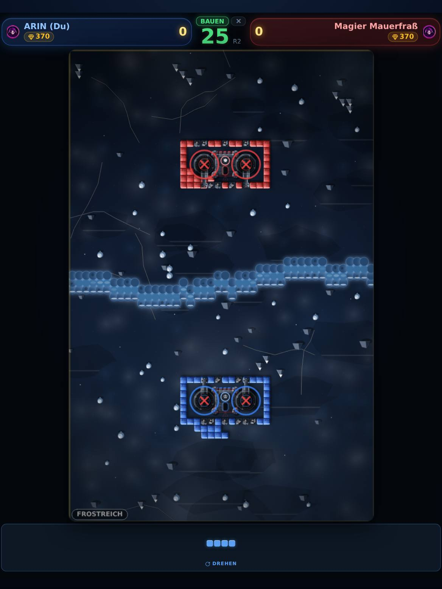
Auf dem iPad
Dasselbe Spiel, nur größer.
Hochkant — und das ist eine Entscheidung, keine Auslassung. Zwei Leute an einem Gerät sitzen sich an den kurzen Kanten gegenüber. Quer läge das Brett als schmaler Streifen in der Mitte, und links und rechts bliebe Platz liegen, den niemand braucht.
Kopfzeile und Bauteil-Leiste reichen bis an die Ränder, das Brett steht dazwischen so groß, wie die Höhe es zulässt. Nichts daran ist ein vergrößertes Telefonbild.
Was noch drinsteckt
Vier Fenster, die auf keinem Spielfeld stehen.
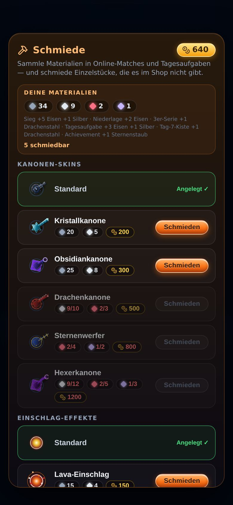
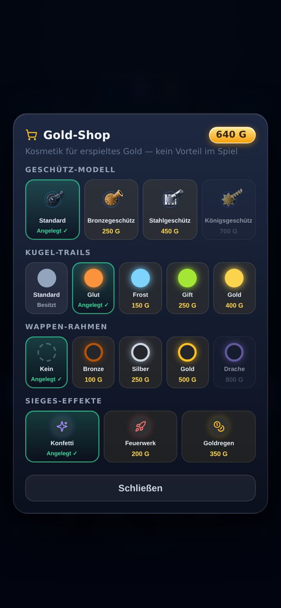
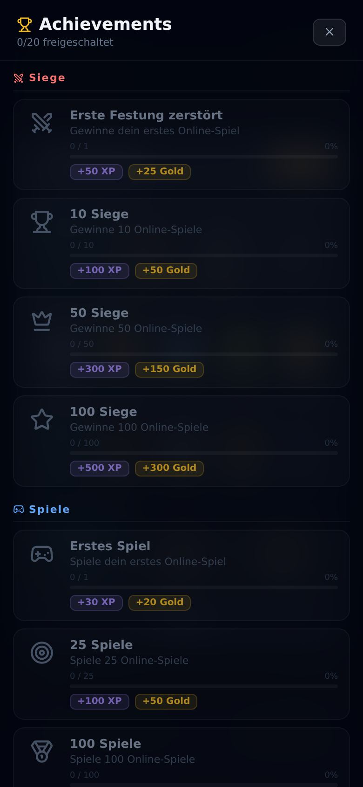
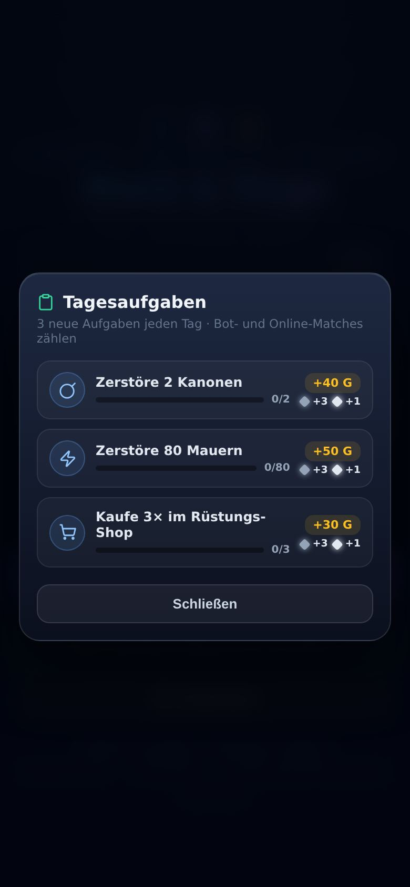
Kleine Regeln, große Wirkung
Die Sachen, die man erst nach ein paar Partien merkt.
- AufladenWer eine ganze Schussphase nicht feuert, sammelt Ladung — die nächste Salve schießt entsprechend mehr Kugeln. Aussetzen ist eine echte Alternative zum Dauerfeuer.
- Kanonentod sprengt mitFällt eine Kanone, reißt sie die Mauern im Umkreis von drei mal drei Feldern mit. Wer seine Kanonen eng an den Wall stellt, verliert beides auf einmal.
- Kein AbsaufenWer keine einsatzfähige Kanone mehr hat, bekommt doppelten Sold und die nächste Kanone zum Grundpreis. Ohne das wäre eine verlorene Runde das Ende der Partie.
- Trümmer sind RohstoffZerschossene Mauern bleiben als Trümmer liegen. Die Reparatur macht wieder Mauern daraus — und wird mit jedem Kauf teurer.
- Drei Bot-StufenDer leichte streut beim Zielen und feuert seltener. Der schwere trifft fast genau und kauft ein wie jemand, der weiß, was er tut.
Ehrlich gesagt
Was es kostet und was es von dir weiß.
- Es kostet nichtsKeine Werbung, keine Käufe, kein Abo, keine Energie, die sich erst wieder auflädt.
- Kein Pay-to-WinGold und Kosmetik sind Anerkennung für Gespieltes. Kein Gegenstand erhöht Schaden, Reichweite oder Nachladezeit.
- Online braucht wenigDein selbst gewählter Name, der Spielstand und die Punktzahl. Kein Klarname, keine E-Mail, keine Werbekennung.

Mitmachen
In drei Schritten in der Beta.
- 1 · TestFlight holenApples kostenlose App zum Testen, aus dem App Store. Du brauchst eine Apple-ID — mehr nicht. Bei mir legst du kein Konto an.
- 2 · Den Link öffnentestflight.apple.com/join/hE2AdHwr — auf dem Gerät, auf dem du spielen willst. Der Beitritt passiert in der TestFlight-App, nicht im Browser; am Rechner gelesen bringt der Link dich nur auf dieselbe Seite zurück.
- 3 · Annehmen, installieren, spielenNeue Fassungen kommen danach von selbst. Jede läuft 90 Tage, dann kommt die nächste. Aufhören geht jederzeit über „Beta verlassen" in TestFlight.
Zwei Burgen. Ein Fluss. Eine Regel.
Beta beitreten Sofort im Browser spielen